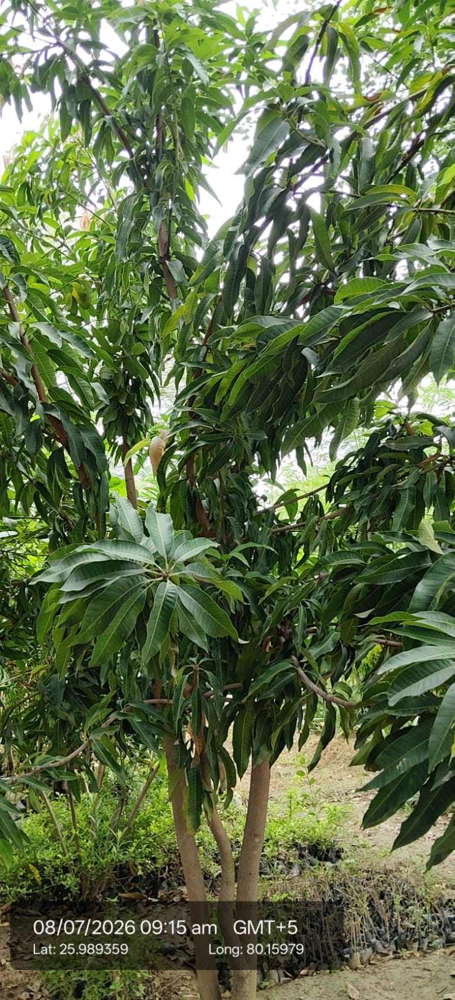

| Scientific name | Mangifera indica |
|---|---|
| Family | Anacardiaceae |
| Category | Trees |
Habitat & Growing Conditions
- Native to South Asia, especially India.
- Thrives in tropical and subtropical climates.
- Grows well in deep, fertile, well‑drained soil.
- Lifespan: Can live for decades, reaching 10–40 m height.
Ecological & Economic Importance
- Mango is called the “King of Fruits” in India.
- Fruits eaten fresh, juiced, or processed into pickles, jams, and sweets.
- Rich in vitamins A, C, and antioxidants.
- Leaves used in religious rituals and decorations.
- Wood used for furniture and construction.
- Seeds and kernels used in traditional medicine.
- Economically vital in fruit trade and exports.
- Provides shade and greenery in plantations.
- Symbolic in Indian culture for prosperity and fertility.
- Supports pollinators and biodiversity with its flowers.
Field Notes
- Category: Tree (large, evergreen fruit tree)